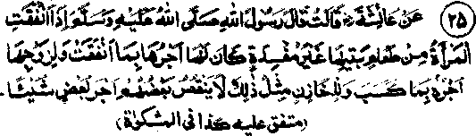

Chapter One · Section (b): Ahadith on the virtues of spending for the cause of Allah
21. Sadaqah by a woman out of her husband’s property

Hadith 25
Rasulullah Sallallaho alaihe wasallam has said that when the wife gives something as Sadaqah out of the family’s provisions, without being wasteful, she will receive a reward for that and the husband also receives a (reward because he was the earner; while the person (man or woman) who made arrangements for the food also earns a reward; all three will be rewarded, without reduction in any one’s share.
Note: Two subjects have come up in this Hadith. One is about spending by the wife and the other about the one who makes various arrangements for food, etc. There are many Traditions about both these subjects. One of the Traditions by the Shaikhain quotes Rasulullah Sallallaho alaihe wasallam as saying that, when a wife spends something without her husband’s permission, she earns half the reward. (Mishkaat). Sa’d Radhiallaho anho has said that once, when Rasulullah Sallallaho alaihe wasallam was initiating into Islam a group of women, one tall woman stood up and said, "O Rasulullah, we the women are a burden to our fathers as well as on our children and husbands, what right do we have on their property?" The reply was, "Fresh things (the perishables which you may eat as well as give to others." Another Hadith says that Allah Ta'ala will reward three persons over a morsel of bread and a handful of dates: one, the husband who is the owner of the house, two, the wife who cooked the food and three, the servant who carried the thing to the beggar at the door.
Asmaa Radhiallaho anha, the sister of Aishah Radhiallaho anha, told Rasulullah Sallallaho alaihe wasallam that she had nothing of her own except what her husband Zubair Radhiallaho anho gave her and asked if she could give out of that to someone. The reply was, "Spend well out of that and do not store any part of it, lest you are barred from receiving anything." This and several similar traditions, have already been mentioned above. In another Hadith, Rasulullah Sallallaho alaihe wasallam has said that, when a woman spends out of her husband’s property without his permission to do so, he will receive half the reward for the Sadaqah. Correspondingly, it has already been mentioned that the wife will receive only fifty percent reward for such Sadaqaat. If carefully interpreted, there are two situations regarding the wife spending out of her husband’s property. One, when the husband gifts something out of his own earnings to the wife and she spends from the gifted part, full reward for that will be her due and half the reward will also be for the husband, although he had given away the ownership of that part to his wife; the fact that he had earned it initially, is given credit due to the kindness and generosity of Allah Ta'ala. The other situation is that the husband does not give ownership of his earnings to his wife but gives her things for household expenditure, from which she gives something as Sadaqah; the full reward in this case will be for the husband and half for the wife, because the man is the owner while the wife suffers from the shortage in family expenses. Similarly, women have been encouraged, in the several traditions, to give as Sadaqah from the things meant for feeding the family. They should not refuse to do so on the excuse that the husband’s permission is not there. In contrast to this line of advice, there are certain Traditions forbidding action in that manner.
Abu Umamah Radhiallaho anho has said that, on the occasion of ‘Hajja-tul-Wida, Rasulullah Sallallaho alaihe wasallam, in his famous address, directed that no woman should spend from the property of her husband without his permission. Someone asked if food was also not to be given away as Sadaqah without permission. Rasulullah Sallallaho alaihe wasallam replied that food was the best of the property; even that is not to be given away without permission. This Tradition, in reality, does not contradict the previous Ahadith. All the earlier Traditions are based on common and general conditions, as well-known practices in homes that, whatever the husbands give for household routine expenditure, they do not object to anything being given as Sadaqah by the wives or for feeding a poor person from that money. On the other hand, a husband asking questions regarding that expenditure is considered to be mean and miserly. However, in spite of this common practice, if a miserly husband does not permit this, it is improper for a woman to give anything as Sadaqah or as a gift from what she receives for household expenses. Nevertheless, she may spend on anything she likes from her own belongings. A person submitted to Rasulullah Sallallaho alaihe wasallam that his wife spent from what he gave her without his permission. Rasulullah Sallallaho alaihe wasallam replied that both he and his wife would receive reward for that. When the person said that he had forbidden her to do so, Rasulullah Sallallaho alaihe wasallam replied that he will have a return for his miserliness and his wife will receive a reward for her kindness. This shows that the husband’s act of stopping the wife from spending such a small thing amounts to miserliness and also that the wife should not spend when her husband stops her from doing so. However, if the wife is anxious to give away Sadaqah, but is unable to give because of her husband’s orders, she will be rewarded continuously for her noble intention.
Allama ‘Aini Rahmatullah alaihe says that in such matters, the current practices vary in different towns and cities and the attitudes of husbands are also different; some approve of the wive’s actions and others do not. Likewise , a difference occurs over the kind of things given away. Certain things are so ordinary that no importance is attached to their being given away, while some others are considered important by the husband. In some cases, retention of things may render them useless while in another case a certain thing remains useful for the future. According to Ibne Hajar Rahmatullah alaihe, the wife should not spend in a way that may lead to trouble. Some Ulama have said that it was a well-known custom in Hijaz to encourage wives to spend as Sadaqah and they had a general permission to give from the eatables to the poor, the guests, the needy neighbouring women and the beggars. The purpose of Rasulullah Sallallaho alaihe wasallam in the above Ahadith Im to persuade the Ummah to follow the good practice of the Arabs in spending on the needy people. Consequently, it has become a general custom among the Muslim families in our country that husbands do not mind their wives giving as Sadaqah from the eatables to the poor, the needy relatives or the hungry.
The other subject in the Hadith above is about the steward (Cashier) or the caretaker, etc. Usually the persons in those positions create hinderance when the owner wishes to give something as a present to someone. It often happens, in the case of the rich and ruling people, that their stewards and cashiers cause obstructions even against the written instructions from their masters on the plea of funds not being available. That is why Rasulullah Sallallaho alaihe wasallam has stressed and encouraged, in a number of Ahadith that if these employees willingly and cheerfully comply with their master’s instructions and orders, they will receive from Allah Ta'ala, through His kindness, suitable honour and rewards for their being the means for accomplishing the good deed. There are several Ahadith on this. One such Hadith says, Tf a Muslim caretaker or a treasurer fully and whole-heartedly obeys his master’s commands, he will be counted among the alms-givers". Another Hadith says, "If an article given as Sadaqah passes through seventy million hands, the last one will receive the same reward as the first one. For example, a king gives orders for giving Sadaqah and, if a large number of persons are involved in the arrangements, each one of them will be entitled to receive a similar reward as the king who had given the orders, although the precise extent of reward may vary. It is not necessary that the master should receive the most. In some cases, the master may be the greatest receiver, e.g. a master may give a hundred rupees to a servant for giving to a person who is present or waiting at the gate; in this case the master’s share of reward will be greater. In another case, a master gives a pomegranate to a servant to be delivered to a sick man living at a distant place. The hardship in reaching there deserves more consideration than the piece of fruit: and here the servant will receive more reward than the master. Similarly, a treasurer has to make effort in collecting money and keeping it, while the master gets it effortlessly. Any amount of Sadaqah given through the treasurer will, therefore, bring more reward for the latter; as the saying is:
"The reward is in proportion to the effort and hardship".
This is a definite rule in the Shariah. But a treasurer, unless he has a general permission of his master to give, cannot give anything without the master’s orders unlike the wife who can spend from the husband’s property without his permission